回顾 | 新年趴
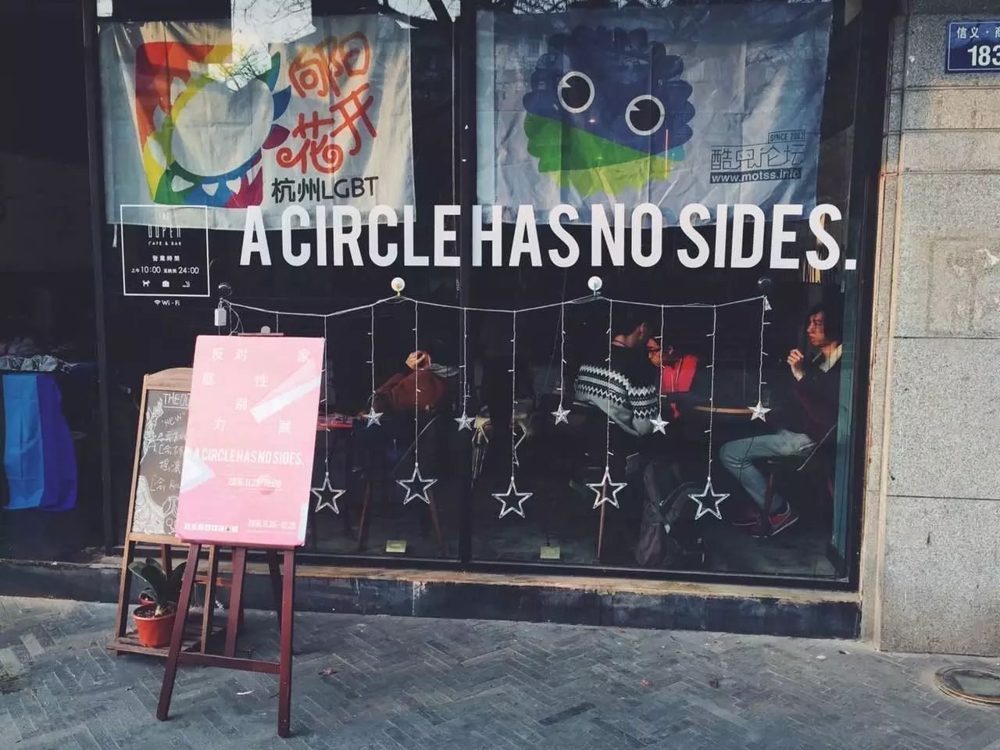
2016年12月24日晚
酷儿论坛新年趴
如期举办
与往年不同的是
本次“重温”主题的新年趴
是与姐妹组织向阳花开合作举办的
更加地多元、热闹和有趣
接下来让瓜瓜带你们回顾
当天的盛况

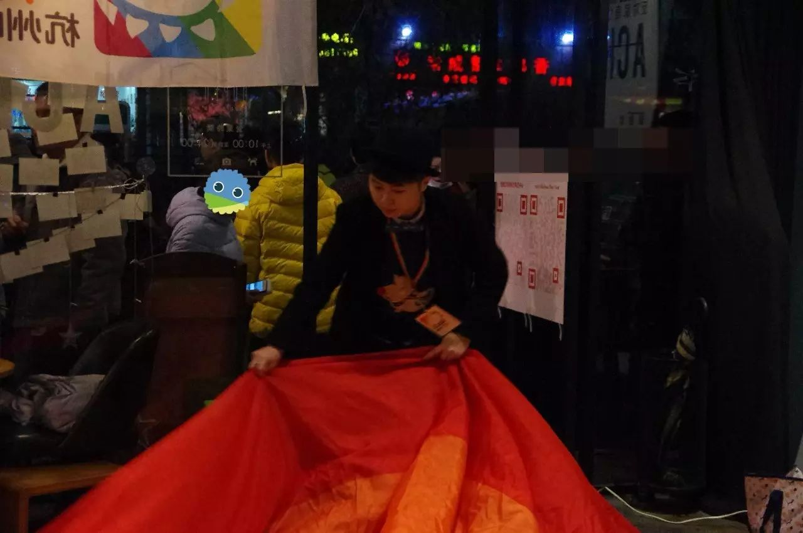
·志愿者在布置场地
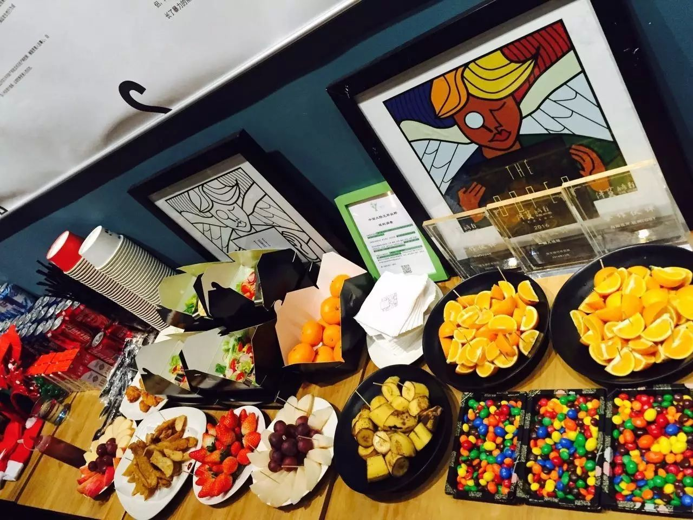
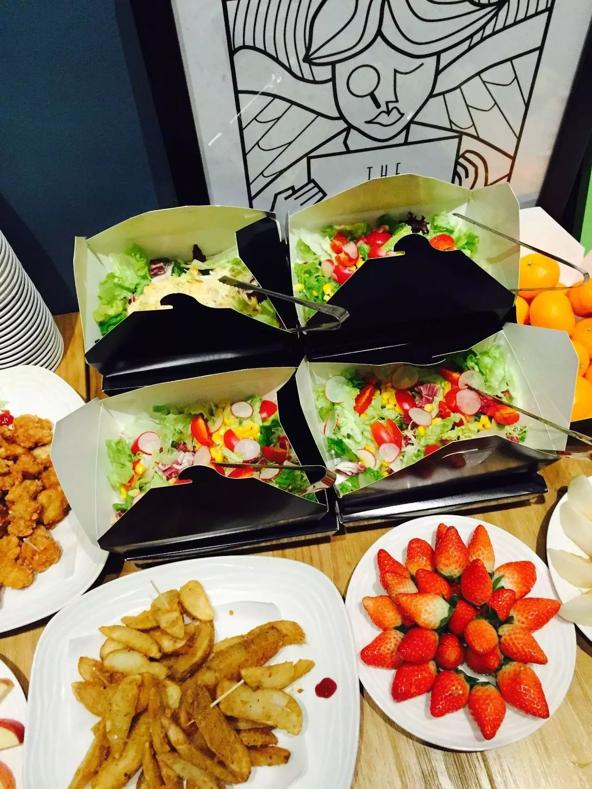
·美味的自助餐点
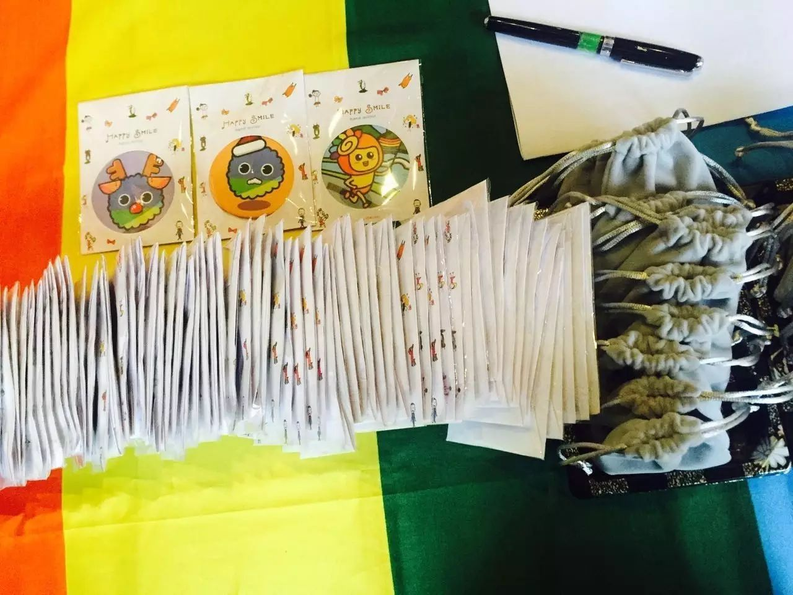
·特别设计的圣诞瓜瓜君与礼品
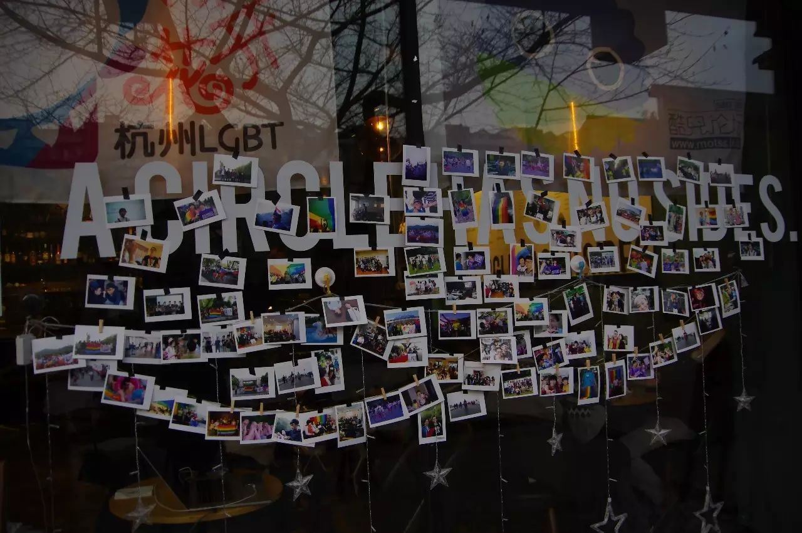
·过去活动的照片墙
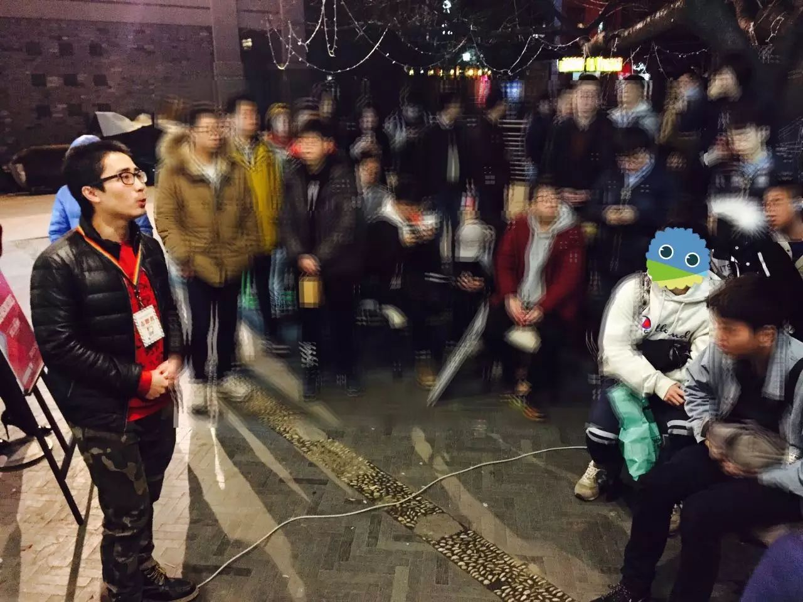
·暖阳作为向阳花开的代表，做了声情并茂的演讲，让我们重温了这一路走来，性少数志愿工作的不易，赢得了在场的热烈掌声。
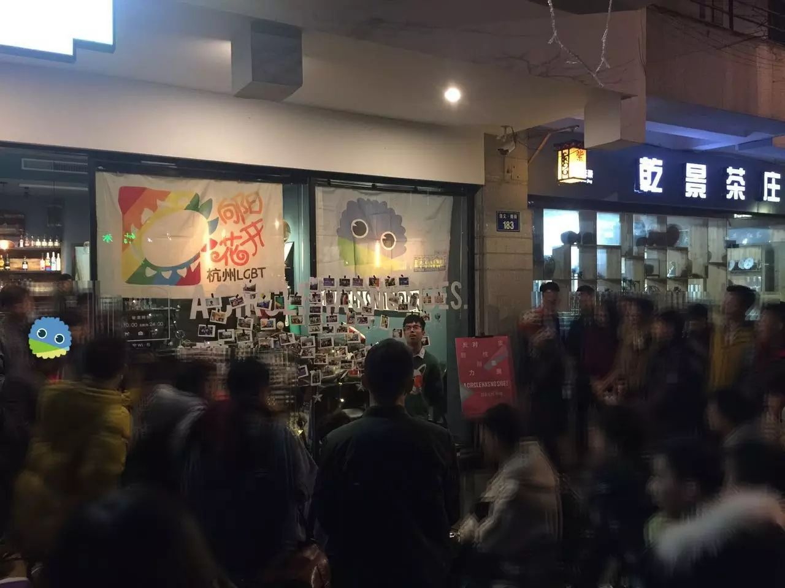
·Owen正式辞去酷儿论坛的站长职务
（点击上面的蓝字可详细了解）
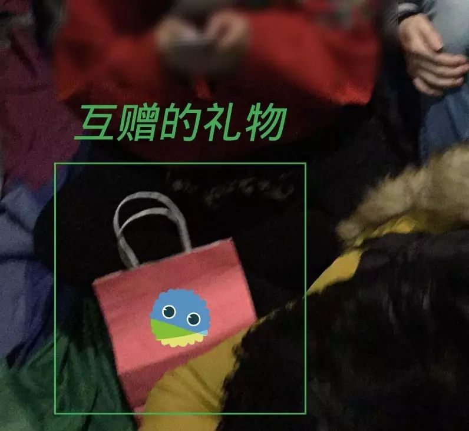
·激动人心的礼物互赠环节
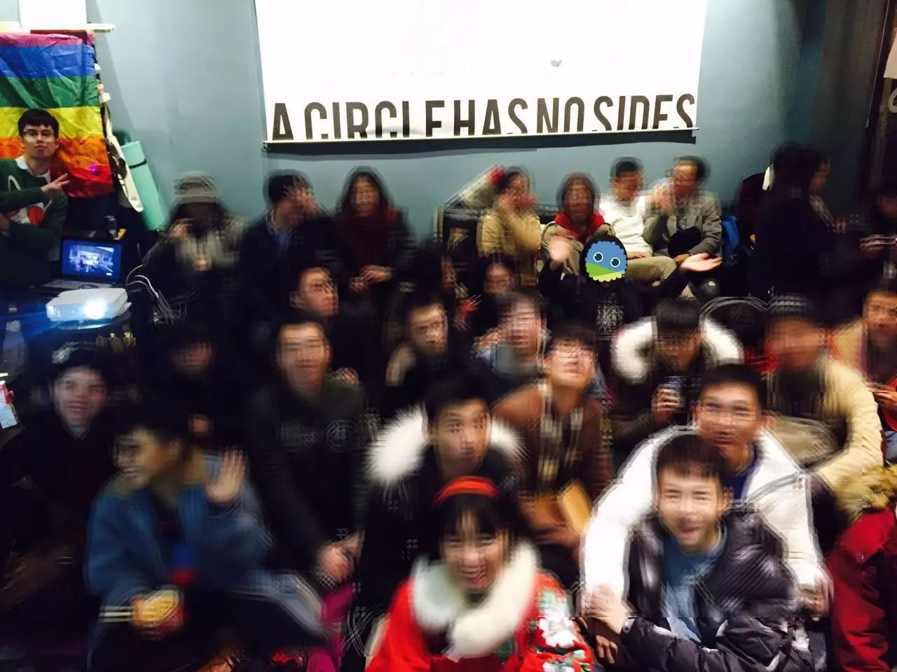
·问答游戏现场热烈
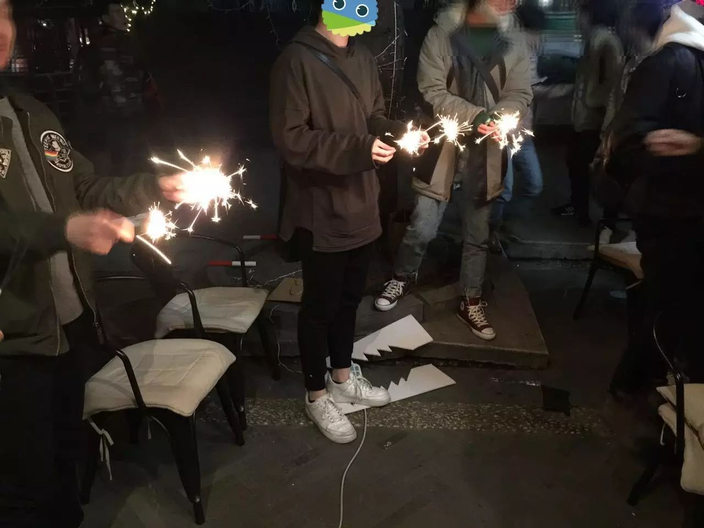
·室外挥舞仙女棒
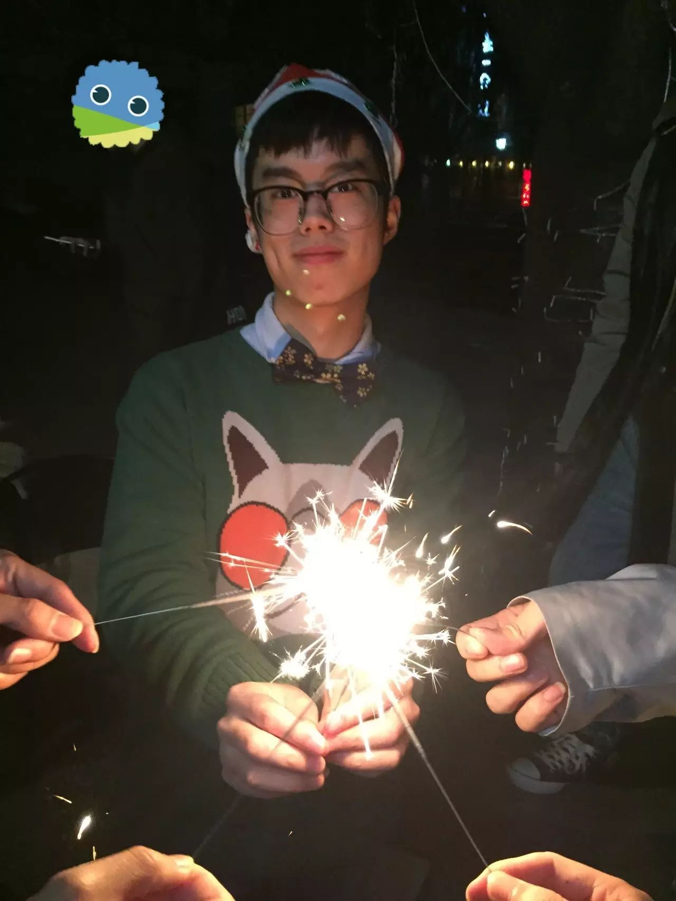
·迷人的Owen
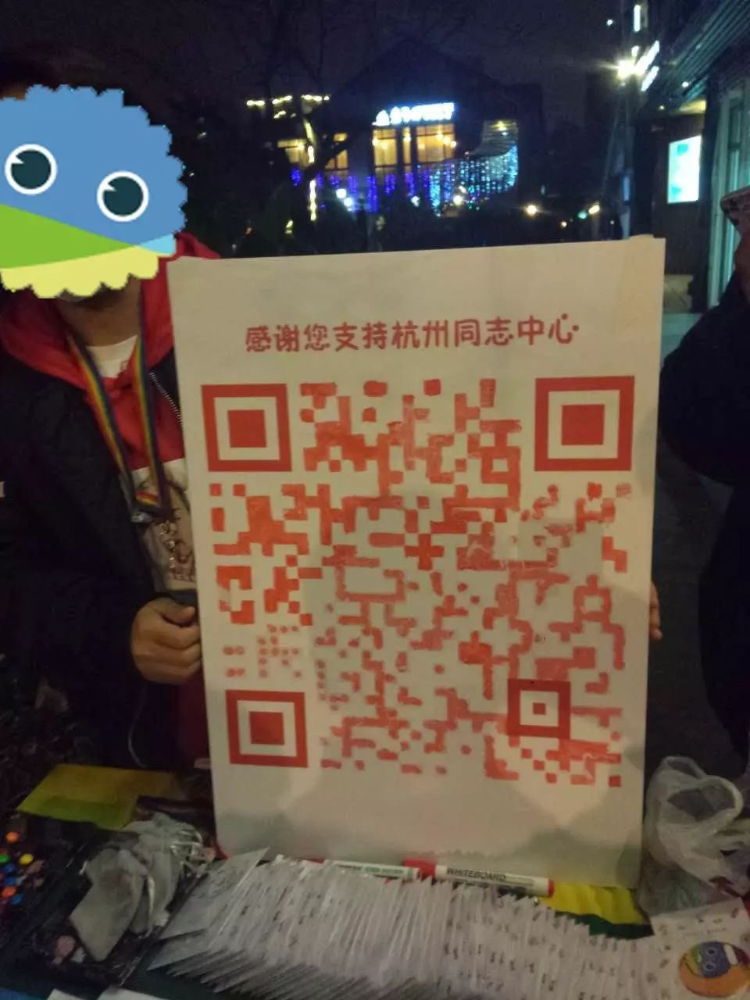
·大家共同绘制的筹款二维码
（现筹款目标尚未达到，愿您扫码支持杭州同志中心）

2016年即将结束
这是富有纪念性的一年
大陆同婚第一案
奥兰多枪击案
杭州同志中心搬了家
台湾同婚修法
酷儿论坛迎来了新任负责人
有悲伤也有喜悦
2017年就要开始了
前方的道路虽不平坦
但却已不是被黑暗笼罩着了
各方的彩虹都在向我们传达
社会可以通过我们的努力变得尊重多元
让我们在2017年继续加油吧！